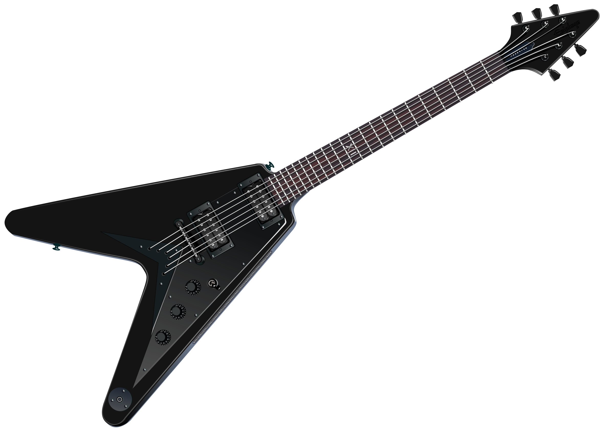

Metal Oath has been around for close to five years now. Hank, lead vocals, founded the band and was
solo for the first year it was in existence. He found a drummer after one year in Anthony.
They played together for two years before they found their guitarists, Bernard and Radford.
They now play together and make great music for their fans to enjoy.
